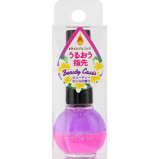
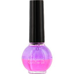

返回列表
产品名称：ビューティーワールド ネイルジェニックキューティクルオイ ビューティーカシス

トレンディハウス ビューティーワールド ネイルジェニックキューティクルオイ ビューティーカシス ８ｍｌ
メーカー トレンディハウス
JANコード 4537715960276
商品の特徴
大事な爪周りの甘皮ケア、指先うるおうネイルオイルです。
可愛いハワイアンカラーです。
ビューティカシス。
成分・分量
【成分】
水、トリ（カプリル酸／カプリン酸）グリセリル、ミネラルオイル、ＰＧ、イソドデカン、エチルヘキサン酸セチル、マカデミア種子油、シア脂、酢酸トコフェロール、香料、プロピルパラベン、メチルパラベン、（＋／－）、赤２２５、赤２２７、黄４、黄２０４、青１、紫２０１、紫４０１
用法及び用量